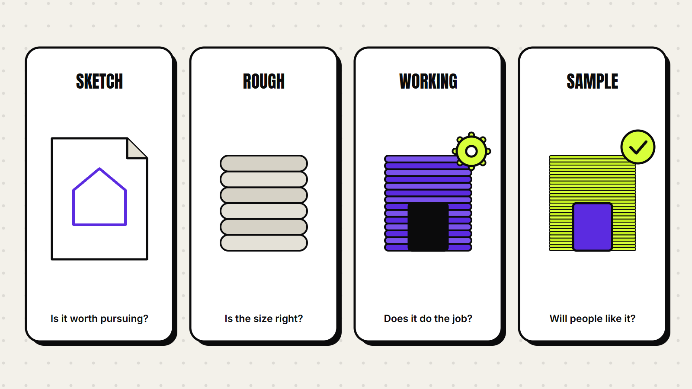
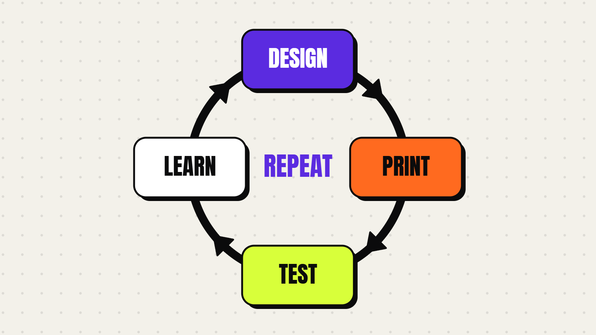

An idea is cheap to imagine and expensive to get wrong. A prototype lets you hold it, test it, and find problems while they are still small. 3D printing is well suited to this because changing the design means changing a file. This guide shows a sensible way to move from a thought to something you can test.
Every prototype should answer a question. Is it the right size? Does it fit the phone? Can someone use it without instructions? Will it survive a drop? A prototype built to answer one question is cheaper and clearer than one trying to prove everything.

| Stage | Question | Typical form |
|---|---|---|
| Sketch or card model | Is the idea worth pursuing? | Paper, cardboard |
| Shape model | Is the size and feel right? | Draft print |
| Fit test | Do parts go together? | Printed sections only |
| Working prototype | Does it do the job? | Full print in a suitable material |
| Appearance sample | Will customers like it? | Fine finish or painted |

If the doubt is a hinge, print the hinge. If it is the grip, print the handle. Small test pieces save material and time and make failures less painful.
A PLA draft shows shape, not necessarily strength or heat behaviour. Test in the intended material before drawing conclusions. If the final product will be moulded, tell the designer so wall thickness and draft angles suit moulding. See printing, machining, and moulding.
Name files with version numbers, label printed parts with a marker, and keep a short log of changes. When a change makes things worse, you can step back.
Stop when the question is answered and the remaining changes are cosmetic, or when testing shows the idea does not solve a real problem. Both are good outcomes. Learning early that something will not work saves far more than polishing it.
If an invention may be patentable or a design registrable, public disclosure can affect your options. Speak to a qualified professional before showing it widely. Ask any service how files are handled. Our file terms explain ours.
Prototypes are for testing, not for relying on. Do not use an untested printed part where failure could injure someone or damage property.
Tip: Write the success test before printing, for example "holds the phone upright with the cable attached". Then judge against it honestly.
Plan money and time for at least three versions. The first usually reveals size mistakes, the second reveals how people really handle the object, and the third tidies the details. Asking for all of this at once, in a fine finish, spends the budget before the questions are answered. Rough early prints in a single colour keep each round affordable. Save fine layers, colour, and painting for the sample you will photograph or show to buyers. Between rounds, write down the decision you made and the evidence for it, so nobody reopens it later without a reason.
When several people give feedback, group it by problem rather than by person. A complaint repeated by three testers matters more than a clever suggestion from one.
As rough as the question allows. If you are checking size, cardboard or a draft print is enough. Polish only when appearance is what you are testing.
Even a few people who have never seen the object reveal obvious confusion. Add more when the product is meant for varied hands, ages, or settings.
When the design has stopped changing, demand is proven, and quantities justify tooling. Ask a moulding specialist to review the design before committing.
Treat prototypes as test objects. Selling a product brings duties around safety, labelling, and quality that a trial print has not been checked against.
The version number, what changed, why, the test result, and the next question. A few lines per version are enough.
Testing is most useful when you stay quiet. If someone holds the object the wrong way, resist correcting them and note it instead, because that is information about the design. Ask open questions such as what they expected to happen. Thank people for criticism, then decide later which comments point to real problems.
Send a sketch or file through the quote form. If you need help turning a sketch into a model, our design service shows you a preview before anything is printed.